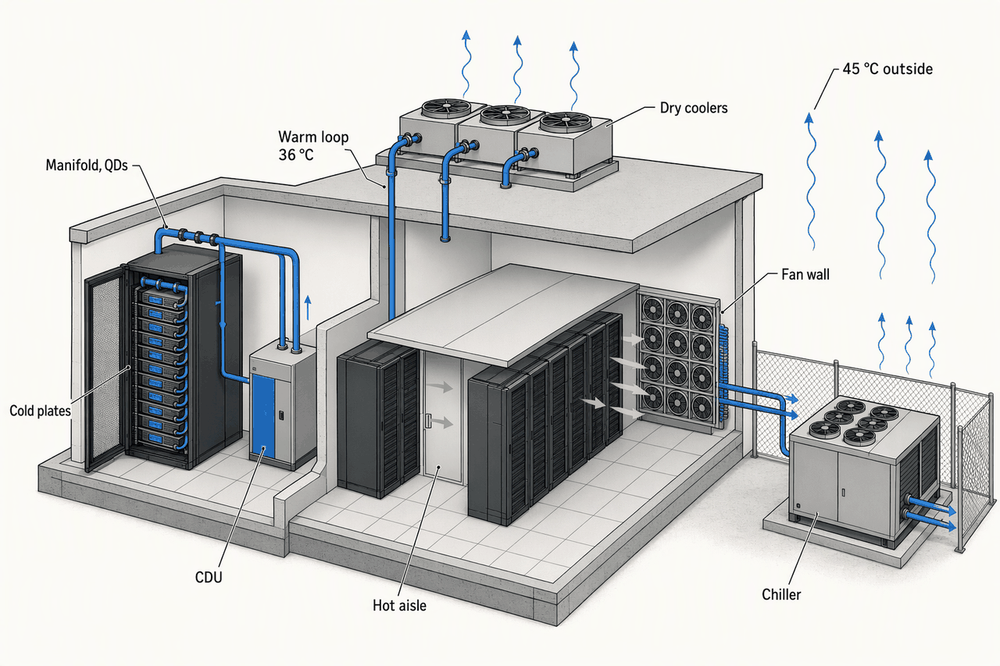
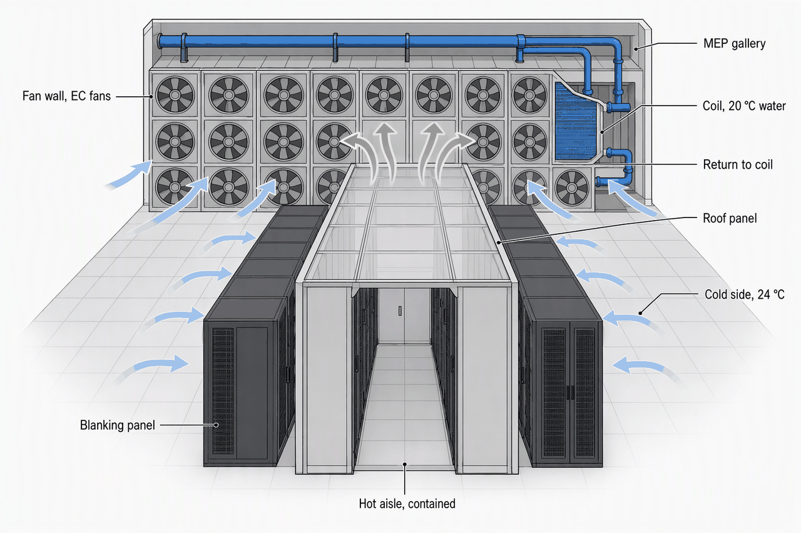
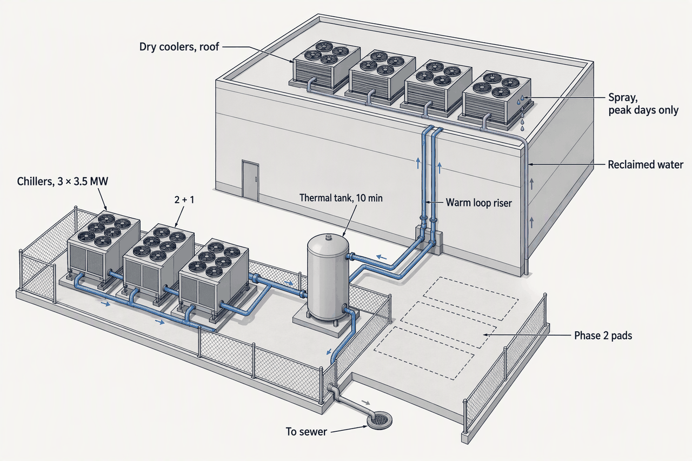
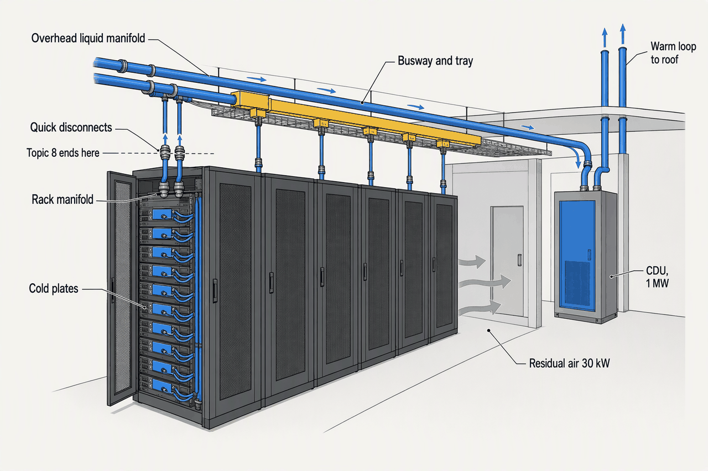

Cooling and Thermal Management
Deep detail and sources: the appendix for this topic. Short version: sixty words.
Topic 6 delivered the watts; this chapter takes them back. Every kilowatt a rack draws leaves it as heat, and the plant's job is to carry that heat from the cold plate or the rack inlet to the Phoenix sky at the lowest cost in compressors, water and schedule. The one number the owner really controls is the temperature each loop runs at.
- 0.284 tonsCooling per kW of IT; 1 kW = 3,412 BTU/hPhase 1 rejects ~10.7 MW, about 3,040 tons
- 2,355 CFMA 15 kW rack at an 11 K rise, ~157 CFM per kWThe best floor tile gives ~1,900; dense air abandons the raised floor
- 70–80%Share of a 120 kW rack's heat captured to liquid24–36 kW per rack still leaves as air
- 45 °CPhoenix peak dry bulb, ASHRAE's A4 ceiling, GB300's warm-water design pointOne number closes free air and opens chiller-free liquid
- 5–15 minThermal storage to bridge a chiller restartRack time constants are seconds
- 26–52 weeksCDU lead time, against 20–40 for a chillerThe CDU is the long pole
The return path
- Server inlet, 18–27 °C recommended
- 11–17 K rise across the rack
- Hot aisle, contained
- return air kept from the supply
- Fan-wall coil in the gallery
- chilled water, 20 °C supply in an 18–24 °C band
- Air-cooled magnetic-bearing chiller in the yard
- lifted to condensing temperature
- Outside air, up to 45 °C
Every box is a heat exchanger and every arrow a temperature step; the plant is bought to make the last step, into 45 °C air, possible. Run each step warmer and the compressor runs fewer hours (APX-cooling §1).
Bypass and recirculation, the two faults containment kills
- Bypass: cold supply short-circuits to the return without passing a server; the coil sees cool air and the plant wastes fan power and capacity.
- Recirculation: hot exhaust re-enters an intake through gaps, missing blanking panels or over the rack top; inlets drift above class and the fix is sealing, not more cooling.
- Static pressure is set to just overcome the path: over-pressurising drives bypass, starving drives recirculation (Upsite).

Two return paths share one building. The warm loop climbs to the roof and never meets a compressor; the air path goes through a chiller to reach the same sky. The rest of the chapter walks each path in turn.
Topic 7 owns everything that moves heat, from the cold plate or rack inlet to the outside air, including the CDU and its facility-water loop; Topic 8 owns what generates the heat: the servers, accelerators, storage and the rack they sit in, up to the cold plate and the rack's coolant quick-disconnects.
Air, and how warm
- recommended, all A classes18–27 °C
- A1 allowable15–32 °C
- A2 allowable10–35 °C
- A3 allowable5–40 °C
- A4 allowable5–45 °C
- H1 allowable, recommended 18–2215–25 °C
- H1 recommended ceiling22 °C
- recommended ceiling27 °C
- Phoenix peak dry bulb; A4 ceiling45 °C
The recommended band did not move; what widened is how far a vendor lets you stray, and H1 pulls dense air-cooled gear back into a tighter zone. Phoenix sits at the A4 edge: free air is off at peak, and the economizer is water-side or adiabatic, about 40% of the year (APX-cooling §2, APX-cooling §4).
| System | How it moves heat | Capacity per unit | Where used 2025–26 | Efficiency | Reference stance |
|---|---|---|---|---|---|
| CRAC, DX | Own compressor and refrigerant in each unit | Small | Legacy and chiller-less rooms | Lowest | ✗ |
| CRAH | Coil and fan on chilled water | Moderate | The raised-floor workhorse | Good | Retail zones only if a raised floor returns |
| In-row | Close-coupled between racks | 20–60 kW rows | Spot density | Good | Alternative for the 40 kW zone |
| Fan wall | Floor-to-ceiling EC fans and coils in the gallery | ~800 kW | The hyperscale hall since 2024 | Best; 38% less fan energy | ✓all air zones |
The fan wall won by turning the air side into one wall of fans on one coil bank, redundant at the fan and cheap under the cube law; the room becomes a plenum that containment must not leak. Discipline, blanking panels and sealed cutouts, is the price and a Topic 11 hand-off (APX-cooling §3).
The airflow arithmetic, and what containment buys
- ΔT = 3.1 × W ÷ CFM at sea level, so 157, 125 and 105 CFM per kW at 20, 25 and 30 °F rises (Upsite). A 15 kW rack needs 2,355, 1,875 or 1,575 CFM. Widening the rise from 20 to 30 °F cuts airflow by a third: the whole economic case for containment.
- Cube law: fan power scales with speed cubed, so 80% speed is about half the power (SubZero).
- Hot-aisle over cold-aisle containment saves 43% of annual cooling energy and 15% of PUE in Schneider's model, room held at 24 °C; SubZero measured top-to-bottom rack ΔT falling from over 10 °F to 1 °F.
- California Title 24 2025, in force 1 January 2026, requires economizers, variable-speed fans and containment in large high-density air-cooled rooms.

This is what air with containment is in 2026: not a CRAC in a corner but a wall of the building that breathes, and an aisle the operator must keep sealed.
The plant
- W17, chiller required0–17 °C
- W27, chiller usual17–27 °C
- W32, chiller-free most sites27–32 °C
- W40, dry cooler year-round32–40 °C
- W45, GB300's class40–45 °C
- W+, reuse grade45–60 °C
- legacy chilled water7 °C
- reference chilled loop, proposed20 °C
- reference FWS supply36 °C
- GB300 design point; Phoenix peak45 °C
- reference FWS return46 °C
- liquid return, top of range; heat-pump grade at Odense55 °C
Every degree warmer is repaid in compressor hours; from W32 up the chiller leaves the loop. Warmer also means less headroom for the tenant's chip; ASHRAE warns the supportable class may regress as chips run hotter (APX-cooling §6).
| Type | Capacity per unit | kW per ton | Water | Refrigerant | Reference stance |
|---|---|---|---|---|---|
| Air-cooled screw | 0.2–1.5 MW | 1.0–1.4 | None | A2L | ✗high-ambient penalty |
| Water-cooled centrifugal | 1–7 MW | 0.5–0.65 | Tower water | R-1234ze, R-513A | ✗breaks the water rule |
| Magnetic-bearing oil-free centrifugal | 0.5–3.5 MW | ~0.5, IPLV to ~0.3 | Tower or air | R-1234ze, R-515B | The class |
| Air-cooled magnetic-bearing, York YDAM class | 3.5 MW | Excellent part load | None | R-1234ze | ✓3 units, 2 + 1; ~3 min restart; 45 °C warm water |
The water rule chooses the chiller: air-cooled, because a tower is water; magnetic-bearing, because a dry-cooled plant lives at part load and low lift. The refrigerant is a code question for this year's BOD (APX-cooling §5).
Refrigerants, and the other units on the market
- The AIM Act in the US and F-gas in the EU push chillers to low-GWP fluids: R-1234ze, R-513A, R-515B. R-515B is A1, non-flammable, and simplifies code compliance against the mildly flammable A2Ls; Vertiv redesigned its lines for low-GWP by early 2025.
- LG launched a 480–600 RT air-cooled magnetic-bearing centrifugal in September 2026 claiming refrigerant free-cooling about 30% below hydronic free-cooling (verify: dated).
- kW per ton figures are indicative; selections are checked against AHRI-certified data.
- t = 0, utility drops
- chillers and dry-cooler fans stop
- 10–45 s with no active cooling
- 120 kW inlets rise within a minute
- ≤ 15 s, generators carry load (Topic 5)
- pumps and fans restart
- Chillers restart: ~3 min magnetic-bearing, 5–15 min conventional
- the chilled loop is carried meanwhile
- Stratified tank carries the chilled loop, 10 minutes proposed
- until chiller output returns
- Warm loop: dry coolers and CDU pumps back on generator
The battery bought the power chain fifteen seconds; the tank buys the chilled loop ten minutes, because a chiller cannot be started like a generator. The warm loop is the easy side: its heat sink is the sky (APX-cooling §7).
What a stratified tank is, and how it is sized
- One tall tank holding cold water under warm, separated by a thermocline; supply draws from the bottom, return enters the top, so stored cooling is volume times temperature difference.
- Sized in minutes to cover generator start plus chiller restart, 5–15 in the research, 10 proposed here for the chilled side only; the worked volume is in the appendix.
- Whether CDU pumps and fan walls ride the UPS is not in the research and is marked for verification.

The yard is the water decision made concrete: no towers, a purple pipe used a few weeks a year, and a tank instead of a bigger chiller (APX-cooling §11).
Water, in numbers
- WUE is annual site water in litres over IT kWh (The Green Grid); it gives no credit for reclaimed water. Sources differ on the industry average: LBNL 2024 puts US site WUE near 0.36 L/kWh, while the 1.8–1.9 figure Topic 3 quoted comes from 2025 secondary guides (Data Center Knowledge, EESI). Equinix reports 0.91 portfolio-wide, 1.41 at evaporative sites; Microsoft fell from 0.49 to 0.30 on the way to a zero-water design piloted in Phoenix from late 2027.
- The reference hall's WUE is near zero in dry hours; the 0.2 L/kWh budget is spent on peak-day spray. Heat reuse is not built: Phoenix has no customer for 45–55 °C water.
Liquid
| Method | kW per rack | Share to liquid | Facility water | Water use | PUE |
|---|---|---|---|---|---|
| Rear-door HX | 20–80 | 80–100% of sensible | 14–27 °C | Low | 1.2–1.35 |
| DTC single-phase | 40–200+ | 70–80% | 30–45 °C | Near zero, dry | 1.1–1.25; 1.1–1.2 on warm water |
| DTC two-phase | 40–200+ | ~80% | 30–45 °C | Near zero | 1.05–1.10; PFAS-constrained |
| Immersion single-phase | 100–250, to ~900 | ~100% | Warm | Near zero | 1.03–1.10 |
| Immersion two-phase | Highest | ~100% | Warm | Near zero | 1.02–1.05; PFAS-constrained |
Rear doors keep the room neutral, cold plates take most of the heat and leave a quarter in air, immersion takes all; the two-phase rungs lost their fluids to regulation. The reference hall uses single-phase cold plates, like GB200-class racks (APX-cooling §8).
Who uses each, and the PFAS story
- Rear doors: AI retrofits and mid-density. In-row: HPC and spot density. Single-phase cold plates: the AI mainstream, about 55% of liquid deployments in 2026 (verify: market report). Immersion: crypto, HPC, some AI.
- 3M announced in December 2022 that it would exit PFAS manufacturing by the end of 2025; the last order date for Novec fluids was 31 March 2025. EPA's hazardous-substance designation and EU restrictions leave two-phase methods at "immediate risk of obsolescence" (Motivair via DCD). Hydrocarbon two-phase fluids were not commercially qualified as of mid-2026; TSCA PFAS reporting for operators is due 31 January 2027.
- Cold plate outlet, Topic 8's side
- into the rack manifold
- Rack manifold and blind-mate QDs; TCS ~48 °C out, ~40 °C in, 150–180 LPM, PG25
- overhead to the CDU room
- CDU, one per pod, 3–4 °C approach; TCS isolated from FWS, filtered, dew-point controlled
- heat crosses into facility water
- FWS ~46 °C out, 36 °C in, W40
- up the riser
- Adiabatic dry coolers on the roof, N+1; dry most hours, reclaimed spray on peak days
- to outside air
- Side branch: 24–36 kW per rack of residual air to the fan wall
Two loops, one heat exchanger, every temperature chosen so the last box needs no compressor. The CDU is where the tenant's water meets the owner's, and where the contract meets the engineering (APX-cooling §9).
What else the pod's air carries, and the cross-tie
- About one air-cooled 20–30 kW network rack per two GPU racks stands in the pod (Topic 9), outside the 1,000; it is cooled by the same fan-wall air that takes the pods' residual, and the fan walls are sized for it.
- A colo cannot know its tenant's hardware. GB300 is designed for 45 °C supply, but third-party GB200 guides cite 18–25 °C facility water. The reference design therefore adds a valved cross-tie from the chilled plant that can pull the FWS toward W32 for a tenant that needs it, at the cost of compressor hours on that pod.
- The dump's TCS figures, 32 / 40 °C, cannot sit above a 36 °C FWS at a 3–4 °C approach; the course uses 40 / 48 and flags it (APX-cooling §10).

The liquid pod is still an air pod: a quarter of its heat leaves the old way, and the ceiling carries three trades. At the quick disconnect Topic 8's rack becomes Topic 7's heat.
- open air2–10 kW per rack
- containment10–30 kW per rack
- rear-door and in-row20–80 kW per rack
- direct-to-chip, 50–200+50–250 kW per rack
- immersion100–250 kW per rack
- comfort limit for air20 kW per rack
- practical containment ceiling30 kW per rack
- air impractical45 kW per rack
- direct-to-chip the only path80 kW per rack
- GB200 NVL72132 kW per rack
- GB300 NVL72142 kW per rack
- Vera Rubin, projected246 kW per rack
Topic 2's scale survives with two edits: containment reaches 30 kW with discipline, and chip-level liquid is mandatory from 50–80 kW. The explorer's switch points at 20, 45 and 80 stand (APX-cooling §12).
Phase 1 assembled
| Zone | Method | Per rack | Loop and supply | Units | Touches a chiller |
|---|---|---|---|---|---|
| ~77 racks @ 8 kW | Containment on fan walls | ~1,250 CFM | Chilled, 20 °C | Shared fan walls | ✓ |
| ~77 @ 15 kW | Containment on fan walls | ~2,355 CFM | Chilled, 20 °C | Shared fan walls | ✓ |
| ~50 @ 40 kW | Passive rear-door HX, rated 44–75 kW | Room-neutral | Chilled, 20 °C | One door per rack | ✓ |
| ~50 @ 120 kW | DTC cold plates and CDUs | 150–180 LPM | FWS 36 °C, W40 | 7 × 1 MW CDUs, 6 + 1; N+1 dry coolers | ✗only the 24–36 kW residual |
Everything under 40 kW and every pod's leftover quarter lives on the chilled loop; the pods' cold plates live on the warm loop and never see a compressor. The chiller count is set by the air, the CDU count by the pods (APX-cooling §12).
- IT on the warm loop4.5cold plates, dry-cooled
- IT on chilled water5.5air zones 4.0 plus pod residual ~1.5
- In-hall electrical losses0.7UPS, PDU, lighting
- Warm-loop mechanical0.3dry-cooler fans, FWS and CDU pumps
- Chilled-loop mechanical1.5compressors, pumps, fan walls
A bit over half the heat takes five times the electricity: the chilled loop carries about 58% of the heat and about 80% of the cooling energy, for a PUE near 1.25 annually and 1.35–1.45 in the monsoon week. Every rack moved from air to the warm loop lowers PUE, which is why the campus reads better at 40 MW than Hall 1 does (APX-cooling §12).
Delivery and risk
- Chiller and dry-cooler slots reserved with the electrical gearT+3–6Owner; 20–40 and 20–30 weeks
- CDUs and manifolds ordered at land closeT+6–9Owner; 26–52 weeks, the long pole
- Headers, stubs and valved taps for 40 MW cast inT+18–22Contractor
- Mains, fan walls and overhead manifolds hungT+24–31The ceiling shared with busway and tray
- Chillers, dry coolers and tank setT+30–34Riggers
- CDUs set, piped, flushed, charged; water quality provenT+34–38Owner's vendor with the contractor
- Plant on generator test; TCS commissioned jointly; Hall 1 liveT+38–42Topic 11
- Phases 2–4 repeat per hall; campus N+1 headers; later halls skew to the warm loopT+42 onOwner
The chiller is no longer the long pole; the CDU is, and it must be piped, charged and commissioned before a GPU rack that ships in weeks can plug in. Order it with the land, not the racks (APX-cooling §12).
Trace a watt from a 120 kW rack's cold plate to the Phoenix sky: name the two loops, the temperatures at each hand-off, and the one part of the pod that touches a chiller.
Cold plate to rack manifold and quick disconnects on the TCS, about 48 °C out and 40 °C back at 150–180 LPM; across the CDU at a 3–4 °C approach into the FWS at about 46 °C, returning at 36 °C (W40); up to the adiabatic dry coolers on the roof and into the outside air. Only the 24–36 kW per rack of residual air, taken by the fan wall on chilled water, touches a chiller.
Why does a 45 °C dry bulb not kill the design? Which loop temperature makes dry coolers work, and what does the reclaimed water do on a monsoon day?
Phoenix is hot but dry, so wet bulb stays low. A warm facility loop at 36 °C supply (W40) can reject to dry coolers year-round without a compressor. On monsoon days the wet bulb rises and reclaimed water is sprayed on the dry-cooler pads to hold capacity; that spray is where the 0.2 L/kWh WUE budget is spent.
For a 15 kW rack, how many CFM at an 11 K rise, what does widening the rise to 17 K do, and why does that argue for containment and against a raised floor?
About 2,355 CFM at 11 K (20 °F), roughly 157 CFM per kW. Widening to 17 K (30 °F) cuts it to about 1,575 CFM, a third less. Only containment holds a rise that wide without mixing, and a best-in-class floor tile delivers only about 1,900 CFM, so a single tile cannot feed the rack at 11 K.
Phase 1: how many chillers of what type and size, how many CDUs, and how are the 10.7 MW of heat split between the two loops?
Three 3.5 MW air-cooled magnetic-bearing centrifugal chillers on R-1234ze, 2 + 1, in the yard; seven 1 MW-class CDUs, 6 + 1, in the CDU room. About 4.5 MW of cold-plate heat goes to the warm loop and dry coolers; about 6.2 MW goes to chilled water: the 4 MW air zones, 1.2–1.8 MW of pod residual air, and the in-hall losses.
When the utility drops, what bridges the gap between the generators taking load and the chillers restarting, for how long, and why does the warm loop care less?
A stratified chilled-water tank, sized in minutes, 10 proposed, covers the 10–45 s with no active cooling plus the chiller restart of about 3 minutes for magnetic-bearing units and 5–15 for conventional ones. The warm loop has no compressor to restart: once dry-cooler fans and CDU pumps are back on generator power it is running.
Who furnishes the CDU in the reference hall, who commissions the TCS loop, and why is "the rack arrives before its CDU" the signature failure?
The owner buys the CDU as owner-furnished equipment and locks its 26–52 week slot at land close. The TCS loop is commissioned jointly by the mechanical contractor, the CDU vendor and the rack integrator. GPU racks ship in weeks, so if the CDU has not been set, piped, flushed, charged and commissioned the rack sits stranded, and the capital with it.